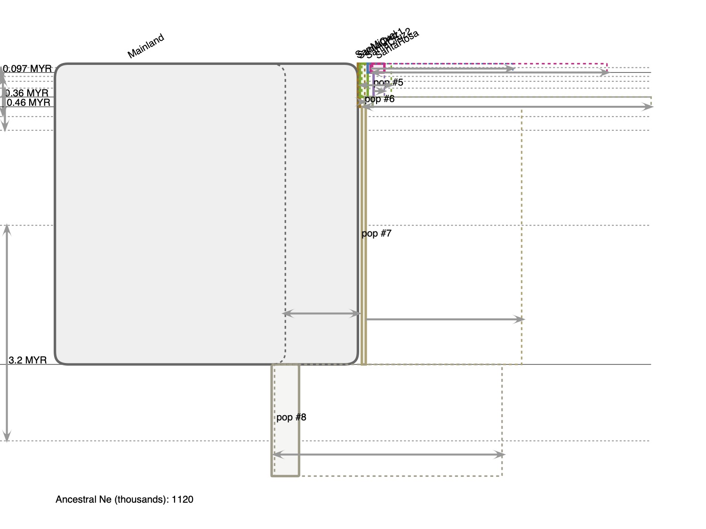
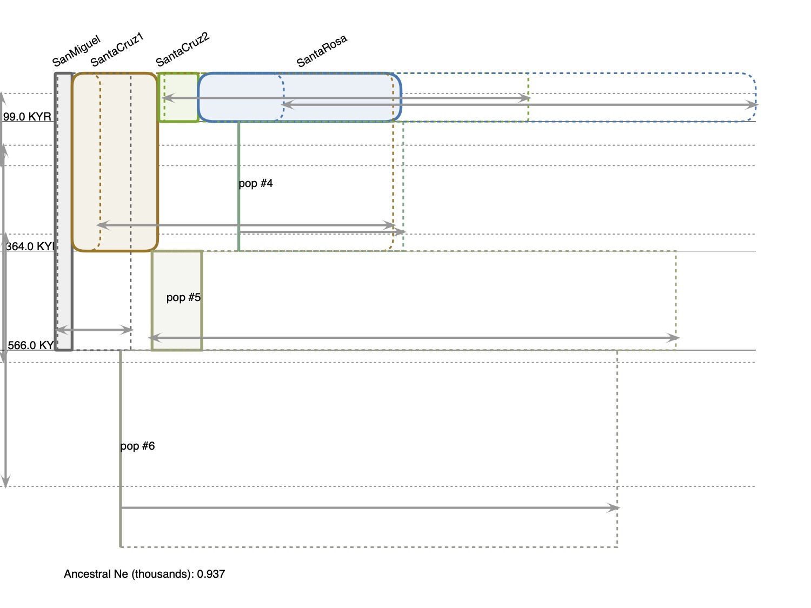

These have been running over the last few days. Noticed that the Sceloporus runs were maxing out q because of the mainland so today tried running without mainland. It severely changes the estimates of the population size.
Overwrote the last run (scelop 11)
mpirun -np 10 IMa3 -i Scelop-merged-outgroups.u -o Scelop-IMa3_11.out -b50000 -L100000 -j8 -t100 -q1000 -hn 20 -ha0.95 -hb0.5 -p237 -r2
#IMa3 Input CI Sceloporus with mainland no outgroups5Mainland SanMiguel SantaCruz1 SantaCruz2 SantaRosa(0,(1,(2,(3,4):5):6):7):81locus_1 29 10 7 5 8 2053 H 0.25 0.00002
ESS values are a little low... another one is running but isn't finished.
Autocorrelations and Effective Sample Size Estimates----------------------------------------------------# Steps Between Values and Autocorrelation EstimatesSteps Log[P] t0 t1 t2 t3 tmrca01 0.9907 0.9842 0.9939 0.9937 0.9934 0.962710 0.7767 0.7047 0.7523 0.7384 0.7528 0.620150 0.3666 0.2424 0.2948 0.2684 0.2958 0.1663100 0.2072 0.1231 0.1680 0.1404 0.1773 0.0835500 0.1064 0.0576 0.0951 0.0923 0.1087 0.02681000 0.1056 0.0471 0.0864 0.0867 0.1155 0.01615000 0.0741 0.0272 0.0383 0.0348 0.0808 -0.005910000 0.0319 0.0159 0.0417 0.0234 0.0694 -0.01005.0e4 0.0313 0.0153 0.0424 0.0238 0.0539 -0.00971.0e5 0.0297 0.0153 0.0437 0.0241 0.0486 -0.00975.0e5 0.0222 0.0178 0.0411 0.0229 0.0518 -0.00871.0e6 0.0250 0.0158 0.0425 0.0242 0.0543 -0.0098ESS 1774 26077 < 119 10927 < 96 108529
Using mutation rate of 1% per year (and assuming 1 year generation. Will need to update with whatever we decide).
Value t0 t1 t2 t3 q0 q1 q2 q3 q4 q5 q6 q7 q8Minbin 2500 57500 97500 442500 256250 6250 6250 6250 6250 6250 6250 6250 6250Maxbin 407500 957500 1112500 4957500 12493750 12493750 12493750 12493750 12493750 12493750 12493750 12493750 12493750HiPt 97500 367500 462500 3217500 12493750 56250 318750 131250 581250 6250 331250 143750 1118750HiSmth 97500 357500 462500 3227500 12493750 56250 318750 131250 581250 6250 331250 143750 1118750Mean 104509 349413 483602 3090221 11293687 95717 559536 1035817 3097531 192066 5815924 1505743 341577395%Lo 42500 147500 267500 1572500 9056250 18750 156250 56250 281250 6250 243750 56250 44375095%Hi 182500 572500 722500 3892500 12456250 281250 1631250 8606250 10993750 793750 12143750 8818750 10718750HPD95Lo 37500 132500 257500 1732500 ? 9481250 18750 81250 18750 93750 0.0 0.0# 0.0 131250HPD95Hi 187500 562500 712500 4047500 ? 12493750 256250 1293750 5968750 9731250 456250 11781250 # 6581250 9506250
IMfig program Copyright 2009-2018 Jody Heycommand line string: -i Scelop-IMa3_11.out -o ScelopIMa11 -f Helvetica -a -k -m x -p 10 -x 0.5 -vFigure ?. A representation of an estimated Isolation with Migration model generated by IMa3 and the IMfig program (Hey et al., 2018). The phylogeny is depicted as a series of boxes organized hierarchically, with ancestor boxes positioned in between the corresponding descendants, and the width of boxes proportional to estimated Ne. 95% confidence intervals for each Ne value are shown as dashed lines to the right of the left side of the corresponding population box. Gray arrows to the 95% Ne intervals are also shown extending to the left and right of the right boundary of each population box. Splitting times are depicted as solid horizontal lines, with text values on the left. Confidence intervals for splitting times are shown as vertical gray arrows on the left, and parallel dashed lines. Ancestral population numbers are shown in ancestral boxes.Hey J, Chung Y, Sethuraman A, Lachance J, Tishkoff SA, Soudsa VC, Wang Y. 2018. Phylogeny Estimation by Integration over Isolation with Migration Models. Mol Biol Evol in press.

mpirun -np 10 IMa3 -i Scelop_islandsOnly_IMaIN.u -o Scelop_islandsOnly_03.out -b50000 -L100000 -j8 -t50 -q150 -hn 20 -ha0.95 -hb0.5 -p237 -r2
#IMa3 Input CI Sceloporus. No mainland4SanMiguel SantaCruz1 SantaCruz2 SantaRosa(0,(1,(2,3):4):5):61locus_1 10 7 5 8 2053 H 0.25 0.00002
Autocorrelations and Effective Sample Size Estimates----------------------------------------------------# Steps Between Values and Autocorrelation EstimatesSteps Log[P] t0 t1 t2 tmrca01 0.9747 0.9648 0.9438 0.9492 0.928610 0.7134 0.6398 0.6098 0.5945 0.496650 0.2835 0.1928 0.1736 0.1763 0.0769100 0.1453 0.0861 0.0825 0.0676 0.0176500 0.0789 0.0340 0.0196 0.0174 0.01551000 0.0425 0.0186 -0.0100 -0.0209 -0.01965000 0.0174 0.0164 -0.0016 0.0007 0.009710000 0.0014 0.0142 0.0080 -0.0022 0.00575.0e4 0.0004 0.0145 0.0086 -0.0022 0.00531.0e5 0.0003 0.0147 0.0090 -0.0029 0.00535.0e5 -0.0015 0.0163 0.0102 -0.0049 0.00591.0e6 0.0037 0.0170 0.0131 -0.0060 0.0039ESS 25263 78677 109090 118258 247451
HISTOGRAM GROUP 3: MARGINAL DISTRIBUTION VALUES IN DEMOGRAPHIC UNITS--------------------------------------------------------------------Calculations use DEFAULT generation time: 1 yearCalculations use mutation rates (per year) from data file- note, curve height has not been adjusted with the scale change. Integration does not equal 1- # of loci with mutation rates in input file : 1Rescaled Population Size Parameter Units: individualsRescaled Time Parameter Units: yearsGeneration time in years specified on command line at runtime: 1.000000Geometric mean of mutation rates per year (based on rates specified in input file): 2.000000e-05Geometric mean of ML estimates of relevant mutation rate scalars calculated from scalar histograms: 1.000000e+00SummariesValue t0 t1 t2 q0 q1 q2 q3 q4 q5 q6Minbin 1250 46250 93750 937.5 937.5 937.5 937.5 937.5 937.5 937.5Maxbin 461250 998750 1438750 1874063 1874063 1874063 1874063 1874063 1874063 1874063HiPt 98750 363750 578750 55313 284063 130313 670313 937.5 165938 937.5HiSmth 98750 363750 566250 57188 284063 130313 670313 937.5 165938 937.5Mean 112952 371367 582634 104925 469712 383255 991489 147469 802957 63687695%Lo 51250 158750 331250 19688 141562 57188 248438 2813 36562 1968895%Hi 198750 606250 851250 300938 1257188 1493438 1815938 833438 1806563 1757813HPD95Lo 41250 146250 328750 8438 90938 21563 284063 0.0 0.0# 0.0#HPD95Hi 188750 591250 846250 248438 1062188 1225313 1845938 544688 1737188 # 1647188 #
IMfig program Copyright 2009-2018 Jody Heycommand line string: -i Scelop_islandsOnly_03.out -o Scelop_islandsOnly_03fig -f Helvetica -a -k -m x -p 10 -x 0.5 -vFigure ?. A representation of an estimated Isolation with Migration model generated by IMa3 and the IMfig program (Hey et al., 2018). The phylogeny is depicted as a series of boxes organized hierarchically, with ancestor boxes positioned in between the corresponding descendants, and the width of boxes proportional to estimated Ne. 95% confidence intervals for each Ne value are shown as dashed lines to the right of the left side of the corresponding population box. Gray arrows to the 95% Ne intervals are also shown extending to the left and right of the right boundary of each population box. Splitting times are depicted as solid horizontal lines, with text values on the left. Confidence intervals for splitting times are shown as vertical gray arrows on the left, and parallel dashed lines. Ancestral population numbers are shown in ancestral boxes.Hey J, Chung Y, Sethuraman A, Lachance J, Tishkoff SA, Soudsa VC, Wang Y. 2018. Phylogeny Estimation by Integration over Isolation with Migration Models. Mol Biol Evol in press.
